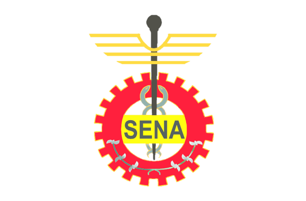

He aquí nuestro ESCUDO:

¿Que significado Tiene?:
El escudo y la bandera del SENA, fueron diseñados
cuando se fundó nuestra institución y reflejan
los tres sectores económicos dentro de los cuales operamos:
El piñón:
representativo del sector industria.
El caduceo:
asociado al de comercio y servicios.
El café:
ligado al primario y extractivo.